JManzur
I'm an AWS Certified Solutions Architect – Professional, working with Cloud, Containers, Serverless, Automation and, more recently, AI. I've been in IT since 2005, covering roles from Helpdesk and SysAdmin to SRE, DevOps and Cloud Architect.
Learn more about me and my work:

Docker HubBlog
My Certifications on Credly